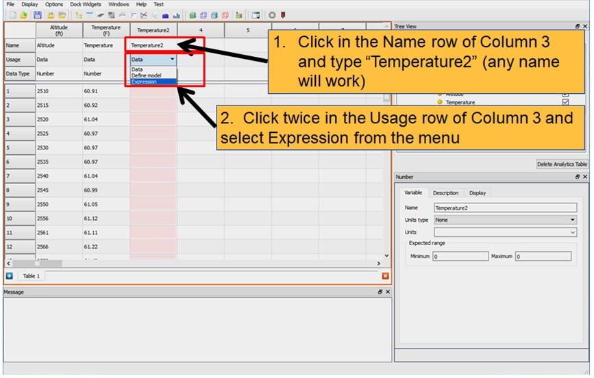
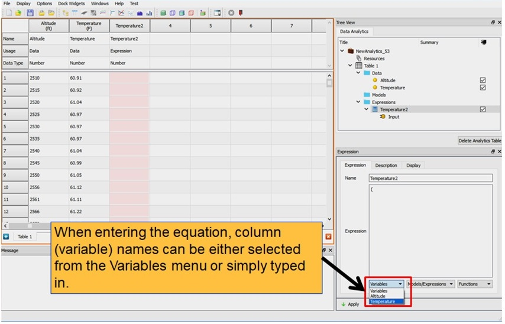
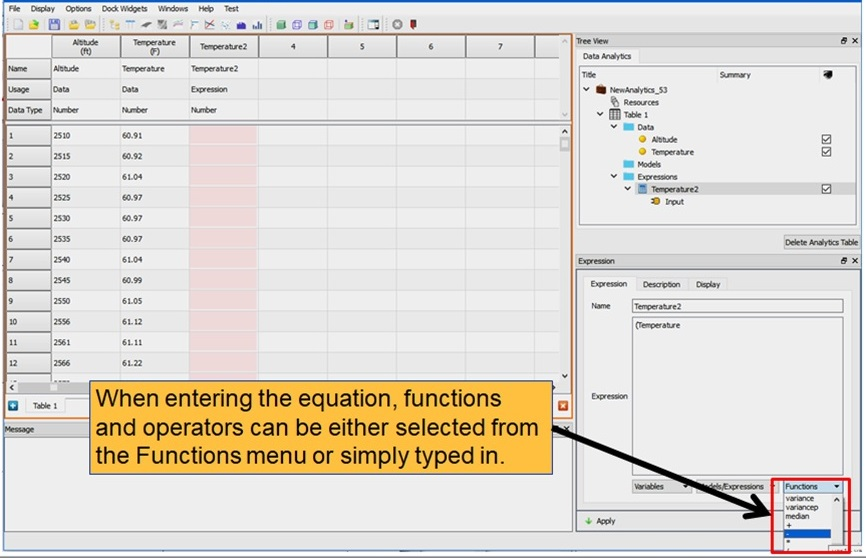
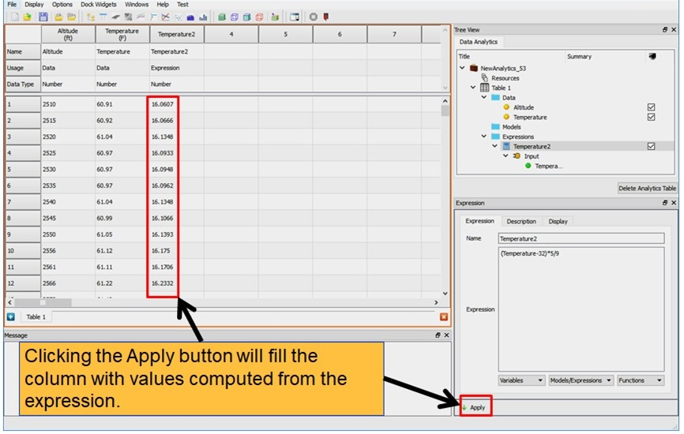

Expressions are simply equations used to derive new data from existing data. A simple use of an expression would be to convert units. Expressions are defined as equations using column names as variables. A resulting value is computed for row of data and the result is placed in the expression’s column.
The standard math symbols are available for addition (+), subtraction (-), multiplication (*) and division (/). The ‘^’ symbol is used for exponent (i.e., x2 would be x^2). Common math function such as sin, cos, tan, abs (absolute value) are also available. A full list is in the Functions menu at the bottom of the expressions property page. A list of column names (variables) is in the Variables menu at the bottom of the expressions property page. Selecting items from these menus adds the function or variable to the expression at the text cursor location. This saves the trouble of typing them in and avoids the potential of typing error.
An expression can be used as a model and in a sense an expression is a model.
The only difference is that an expression does not need to be trained. All parameters are known.
A defined model can be used as a function in an expression. A list of column names (variables) is in the Variables menu at the bottom of the expressions property page.
Expressions serve several purposes. They can be used to perform unit conversions, transform from one coordinate system to another, scale data, compute differences between data columns, etc. Expressions can also be used to make predictions from
models and validate models (more on this in section 57.6)
Fig. 57.5.1 – Fig. 57.5.4.
shows using an expression to convert temperature units.

Setting a column usage to expression

Selecting columns for the expression to operate on

Selecting math function

Evaluating the expression